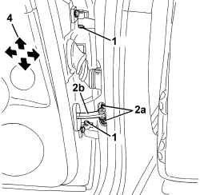
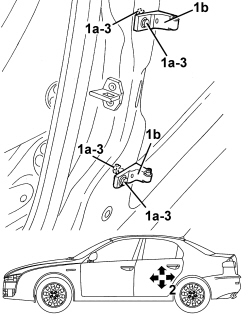

7010A14 REAR SIDE DOOR - ADJUST CENTERING AND MOULDING - INCLUDES ADAPTATION OF HINGES AND SEALS ON DOOR COMPARTMENT
- Path
- Procedures > 70 FITTINGS > 7010 PASSENGER COMPARTMENT REAR SIDE DOORS > 7010A REAR SIDE DOOR ASSEMBLY > 7010A14 REAR SIDE DOOR - ADJUST CENTERING AND MOULDING - INCLUDES ADAPTATION OF HINGES AND SEALS ON DOOR COMPARTMENT
- Kind
- repair procedure (removal / refitting; the operation number is the code)
- Applies to
- all engines; all production periods
- Interactive page
- https://sloeber94.github.io/elrnDB/alfa/159/en/#/939011159
Applies to: all engines; all production periods
1. If the adjustment is carried out after having removed the door, tighten the hinge bolts to the recommended torque.
Component | Fastening | dia | Value (daNm) | Validity |
|---|---|---|---|---|
DOOR HALF HINGES | Bolt | M6x14 | 1.2 ÷ 1.8 |
Op. 7010B14 REAR SIDE DOOR LOCK STRIKER - R.R
- If necessary, tighten the bolts securing the hinges to the door and body.
2. Unscrew opening limiter bolts (2a) and close the door temporarily to return link (2b).

Applies to: all engines; all production periods
- Initially adjust the door within the door compartment. To do this, the bolts securing the hinges to the body must be loosened.
Op. 7040L40 FRONT DOOR RUNNING BOARD (ONE), LEFT OR RIGHT - R.R.
Op. 7050A20 ONE-PIECE REAR SEAT CUSHION - R.R.
Op. 7040L44 REAR DOOR RUNNING BOARD (ONE), LEFT OR RIGHT - R.R.
Op. 7040H36 CENTRE PILLAR LOWER ELEMENT (ONE), LEFT OR RIGHT - R.R
1. Loosen the bolts (1a) securing hinges (1b) to the body.
2. Adjust the door position by means of the slotted bolt holes until it is correctly aligned in the compartment.
3. After adjustment, tighten the bolts to the specified torque.
Component | Fastening | dia | Value (daNm) | Validity |
|---|---|---|---|---|
DOOR HINGES TO BODYSHELL | Bolt | M8x30 | 2.9 ÷ 3.5 |

Applies to: all engines; all production periods
- Refit the components removed to access the hinge fixing bolts.
Op. 7040H36 CENTRE PILLAR LOWER ELEMENT (ONE), LEFT OR RIGHT - R.R
Op. 7040L44 REAR DOOR RUNNING BOARD (ONE), LEFT OR RIGHT - R.R.
Op. 7050A20 ONE-PIECE REAR SEAT CUSHION - R.R.
Op. 7040L40 FRONT DOOR RUNNING BOARD (ONE), LEFT OR RIGHT - R.R.
- If necessary, align the door with the wing and front door as follows.
- Open the door.
1. Loosen the bolts (1a) securing hinges (1b) to the body.
2. Adjust the door position by means of the slotted bolt holes until it is correctly aligned with the wing and front door.
3. After adjustment, tighten the bolts to the specified torque.
Component | Fastening | dia | Value (daNm) | Validity |
|---|---|---|---|---|
DOOR HINGES | Bolt | M8x30 | 2.9 ÷ 3.5 |
4. Remove link (4a) and tighten bolts (4b) to the specified torque.
Component | Fastening | dia | Value (daNm) | Validity |
|---|---|---|---|---|
DOOR CHECK STRAP | Bolt | M6x22 | 0.7 ÷ 1.1 |

Applies to: all engines; all production periods
- Refit and adjust the door striker.
Op. 7010B14 REAR SIDE DOOR LOCK STRIKER - R.R
- Touch up the paint in the hinge half area.
- Check that the stiker and the door lock are correctly matched and that the alignment is correct with the door closed.
Topics linked from this page (5)
- 7010B14 REAR SIDE DOOR LOCK STRIKER - R.R
- 7040H36 CENTRE PILLAR LOWER ELEMENT (ONE), LEFT OR RIGHT - R.R
- 7040L40 FRONT DOOR RUNNING BOARD (ONE), LEFT OR RIGHT - R.R.
- 7040L44 REAR DOOR RUNNING BOARD (ONE), LEFT OR RIGHT - R.R.
- 7050A20 ONE-PIECE REAR SEAT CUSHION - R.R.